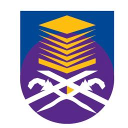

UNIVERSITY
UiTM Kedah was officiated on 1st October 1997 by YB Tun Daim Zainuddin, the Finance Minister. It started its first operation in November 1997 with 162 students and 25 administrative staff. The total of 162 students were recruited to follow apprenticeship programs consisting of Diploma in Accounting, Diploma in Public Administration, Diploma in Business Studies and Diploma in Banking. This time find me traveling even further than my secondary school. I major in information management for library but things I have to learn varies. By this point, I am resigned to staying far away from home though homesickness does find a way to sneak in amid the flurries of my assignments.